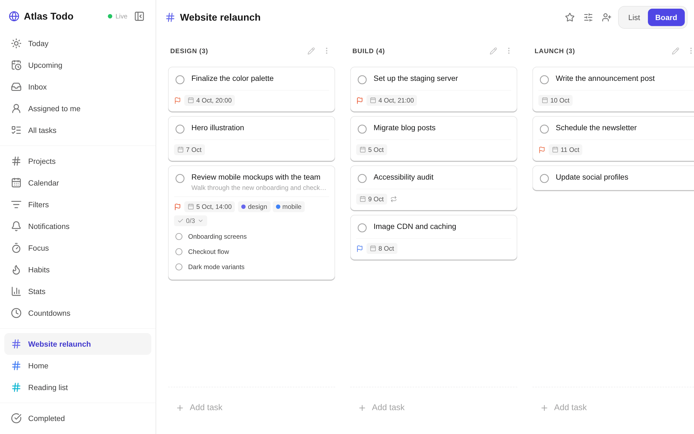

Your tasks, encrypted before they leave your device
Atlas Todo is an open-source to-do app for tasks, notes, projects and habits that syncs live between the web, Android and the Linux desktop, and the server cannot read any of it.
app.atlastodo.dev is a small test server. It may be reset or go offline; keep your own backups or self-host for anything important.

-
End-to-end encrypted
Tasks, notes, projects and habits are encrypted on your devices before they sync, so the server stores them but cannot read them.
-
Works offline
Everything is kept on your device and syncs live once you are back online.
-
Web, Android, Linux, self-hostable
Use it in the browser, on Android or on the Linux desktop, or run your own server with Docker: see the self-hosting guide.